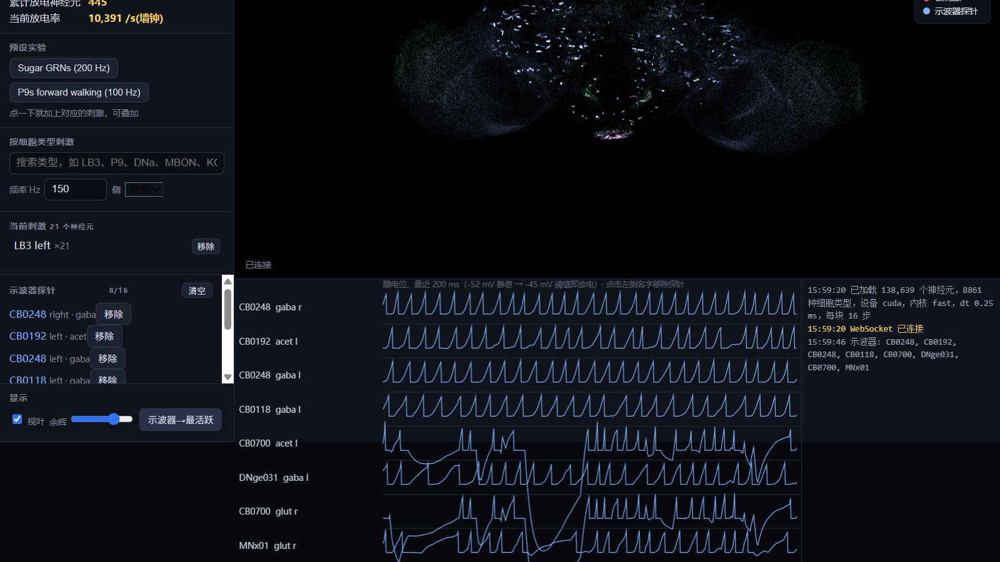
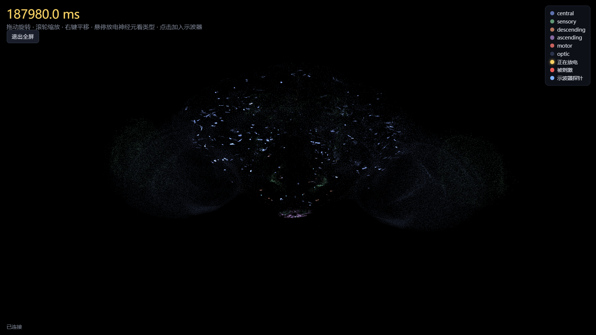

FastBrain · 果蝇全脑实时仿真

这个仓库把一整只果蝇的脑子搬进了电脑：138,639 个神经元、约 1500 万个突触，全部来自真实连接组测绘数据。模型在一张 6 GB 的游戏显卡上实时运行，你可以给神经元施加刺激，看脉冲怎么传遍全脑，就像给大脑做实验，只不过这只果蝇活在显卡里。
神经科学家在 2024 年发表了第一个这样的全脑模型（Shiu et al., Nature），但原版跑 0.5 秒的脑活动要 26 秒，做实验得等。这个项目把同样的模型加速了 27 倍——0.5 秒的脑活动 0.98 秒算完——并且用一整套验证证明了加速没有损失精度。在此之上还做了两件工具：一个能在浏览器里边跑边操作的实时控制台，和本页下面就能直接玩的交互回放。
在线试玩：三个真实实验的回放
下面是三次真实仿真的完整录像，不是动画演示。每个回放里每个点是一个真实神经元的位置，金色闪光是它放电的瞬间。点播放，拖进度条，旋转大脑，把鼠标悬停在放电的神经元上能看到它的名字和放电频率。底部是几个关键神经元的膜电位波形，和示波器上看到的真实神经活动一个道理。
这三个实验在干什么？
糖刺激复现了原论文的经典实验：果蝇腿上的糖味觉感受神经元被激活后，信号经过食道下区传到中枢脑，一路激活几百个神经元。1 秒脑时间里共有 403 个神经元放过电、17,393 次脉冲。
P9 前行刺激的是两个下行通路神经元 P9，原论文证明这能驱动果蝇向前行走。这个实验放电量小得多（130 个神经元、806 次脉冲），因为信号直奔运动输出而去，通路很短。
沉默蘑菇体是干预实验：蘑菇体是果蝇的学习记忆中枢，它的 96 个输出神经元（MBON）被永久沉默（紫色点）后再给糖刺激，全脑脉冲从 17,393 次降到 16,790 次。对比前两个回放，能直观看到一类神经元被拿掉之后信息流向怎么变。这类"在硅基脑里做损毁实验"的能力，正是这个平台的用途。
它是怎么做到的
模型本身不复杂：每个神经元是一个渗漏积分发放单元，膜电位攒到阈值就放一次电，放电沿突触传给下游，突触的强弱和符号全部来自真实连接组。难的是规模——13.8 万个神经元每 0.1 毫秒算一步，原版实现一步要在 GPU 上启动约 75 次计算内核，时间全花在启动开销上。FastBrain 引擎用四招把这个开销压了下去：

事件驱动：只算放电的神经元
每一瞬间放电的神经元只有几百个，占 0.3%。引擎把突触矩阵预先切成 15.1 万个定长小块，每步只把放电神经元的块拣出来做乘加，不再对全图做稠密乘法。
CUDA Graph：一万次启动合成一次
所有张量形状固定之后，连续的 16 步仿真被录制成一张 CUDA Graph，一次启动跑完，每步的内核启动数从约 75 降到约 33。
延迟环：把突触延迟变成编译期常量
突触传递有 1.8 毫秒延迟。引擎用一个环形缓冲区存中间的信号，环长取延迟步数的整数倍，寻址在编译期就确定，运行时零开销。
快的前提是准
加速引擎和原版逐指标对比：放电率相关系数 0.990，而原版自己换个随机种子重跑的相关也只有 0.991。也就是说两个引擎的差异，和同一模型换颗骰子的差异一样大。验证细节见下面"准不准"一节。
跑得到底有多快
同一台 RTX 3060 Laptop、同一个实验（糖刺激 200 Hz、仿真 0.5 秒）、同一套计时代码：

| 后端 | 运行次数 | 仿真耗时 | 实时比 |
|---|---|---|---|
| PyTorch (CUDA)，原版 | 1 | 26.30 s | 0.019× |
| FastBrain，dt 0.25 ms | 1 | 0.98 s | 0.51× |
| FastBrain，dt 0.1 ms（论文步长） | 1 | 2.43 s | 0.21× |
实时比 0.51× 的意思是：脑里过 1 秒，机器只要 2 秒。换成更好的显卡（比如 RTX 5080）可以超过实时。计时的完整数据在仓库 data/results/local_fastbrain/ 里。
准不准：和原版逐点对账
验证覆盖了 2 种刺激 × 2 种时长 × 5 个随机种子 × 3 种步长的完整矩阵，外加 10 秒长程漂移检查。每个指标的及格线不是"差不多"，而是差异必须小于参考模型自身换随机种子产生的噪声：
| 指标 | 参考模型自身噪声 | FastBrain vs 参考 | 结论 |
|---|---|---|---|
| 放电率相关系数 | 0.991 | 0.990 | 噪声之内 |
| 活跃神经元集合重合度（Jaccard） | 0.928 | 0.92 | 噪声之内 |
| 脉冲时序精度（±2 ms） | 0.342 | 0.34 | 噪声之内 |
| 10 秒长程漂移 | — | 逐秒相关 0.989–0.996 | 无发散 |

下图是糖刺激实验的全脑脉冲栅格：每一行是一个放电的神经元，每个点是一次脉冲，按首次放电时间排序，能清楚看到信号从感受神经元（底部）逐级向上游中枢传播的波浪。

在自己电脑上跑一遍
仓库带一个实时控制台：模型在 GPU 上跑，浏览器里同步看到全脑放电，可以随手加刺激、挂探针、暂停重置。装环境大约十分钟（Python + CUDA 版 PyTorch），双击 run_live.bat 就能打开。

控制台全貌：左边选细胞类型加刺激，中间是全脑放电动画，底部示波器是 8 个神经元的实时膜电位。

一键全屏看脑。每个点是一个真实位置的神经元，金色闪光是放电。
完整的操作教程和脚本接口写在仓库的 experiments/LIVE_CONSOLE.md，本页的三个回放用 run_replay.bat 一条命令就能重新生成。
仓库地址：github.com/ArcadiaE/fly-brain（fork 自 eonsystemspbc/fly-brain，GPL-2.0）。
下一步做什么
| 阶段 | 内容 | 状态 |
|---|---|---|
| 0 | FastBrain 引擎与系统验证矩阵 | 已完成，即本页内容 |
| 1 | 把模型放电和公开钙成像实验数据做首次动力学级对比（DANDI 001869 视觉威胁数据集、Aimon 2019 气味数据集）；审计原论文结论对突触符号和权重的敏感性 | 进行中 |
| 2 | 二选一：用贝叶斯优化反向设计刺激方案（产出可执行的 split-GAL4 驱动线建议）；或把蘑菇体三因子学习规则嵌入全脑模型，先在孤立蘑菇体上复现条件反射，再做全脑消融 | 待启动 |
方法论上定了两条规矩：任何结论都必须带一个度数匹配的重连网络做空白对照；不使用任何无法溯源到原始文献的数字。
数据与引用
- 基础模型：Shiu et al. 2024, Nature 634:210–219，PMC11446845
- 连接组：FlyWire v783 公开版，138,639 个神经元全部有细胞类型标注
- 本仓库：github.com/ArcadiaE/fly-brain；基准原始数据
data/results/local_fastbrain/，验证矩阵experiments/out/validation/ - 阶段 1 目标数据集：DANDI 001869（looming 视觉威胁）、Aimon et al. 2019（气味响应，CRCNS 10.6080/K01J97ZN）